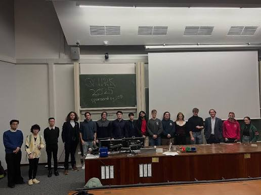

Our History

QUIRK+ began as the London Universities Physics Conference in 2025, an initiative founded by Elias Fink, consisting of the committees of Queen Mary University of London, University College London, Imperial College London, Royal Holloway University of London, and King's College London. It was a brief get-together in the Blackett Laboratory with guest lectures and informal networking over pizza. Students loved the early career networking and meeting with peers across London.
The conference was a success, and word quickly spread. By mid-2025, the "Physics Societies" of QUIRK (an acronym of the 5 founding members) expanded into the University of Cambridge, Surrey, Southampton, Bath, Oxford University, and to two foreign observers in the physics societies of the Swiss Federal Technology Institute of Lausanne (EPFL) and Technical University of Munich (TUM).

In 2026, we hosted the inaugural QUIRK+ conference in Bush House (KCL). Over 500 participants, speakers, volunteers, and sponsors turned up.
We then hosted Part II at the Ray Dolby Centre on February 14th, 2026, with our annual dinner for speakers and sponsors subsequently held at Selwyn College.
Ahead of the 2027 edition, we have multiple new joining us from across the UK & Ireland, giving our group a new name: the "British and Irish Physics Societies". We aim to have over 1000 people at our next event.
All in all, QUIRK+ serves as a way for students and young professionals to network and present their research on a nationally-renowned stage in front of hundreds of peers.